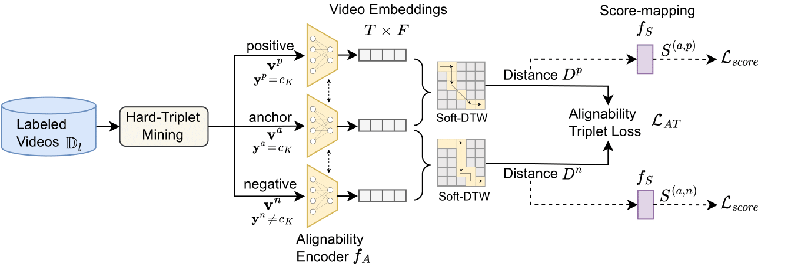
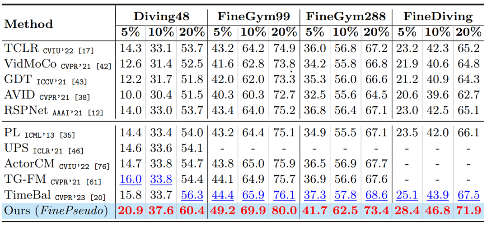

Motivation: (a) Samples actions from the standard coarse-grained action recognition dataset (UCF101) (b) Sample actions from fine-grained action recognition dataset (Diving48) (c) For proof-of-concept, we choose a binary classification problem of fine-grained actions, where the model has to predict whether the pair of videos belong to the same class or not. We consider Diving48 dataset with 10% training data. We first obtain frame-wise video embedding from a pretrained framewise video-encoder model. The top part of (c) shows that cosine distance computed at each timestamp does not provide a discriminative measure, whereas, DTW-based alignment cost provides a clear difference in pair of same vs different classes. The bottom part of (c), shows the performance of the binary classification task in terms of average precision, where our alignability-score significantly outperforms the other standard distances.
Abstract
Real-life applications of action recognition often require a fine-grained understanding of subtle movements, e.g., in sports analytics, user interactions in AR/VR, and surgical videos. Although fine-grained actions are more costly to annotate, existing semi-supervised action recognition has mainly focused on coarse-grained action recognition. Since fine-grained actions are more challenging due to the absence of scene bias, classifying these actions requires an understanding of action-phases. Hence, existing coarse-grained semi-supervised methods do not work effectively. In this work, we for the first time thoroughly investigate semi-supervised fine-grained action recognition (FGAR). We observe that alignment distances like dynamic time warping (DTW) provide a suitable action-phase-aware measure for comparing fine-grained actions, a concept previously unexploited in FGAR. However, since regular DTW distance is pairwise and assumes strict alignment between pairs, it is not directly suitable for classifying fine-grained actions. To utilize such alignment distances in a limited-label setting, we propose an Alignability-Verification-based Metric learning technique to effectively discriminate between fine-grained action pairs. Our learnable alignability score provides a better phase-aware measure, which we use to refine the pseudo-labels of the primary video encoder. Our collaborative pseudo-labeling-based framework 'FinePseudo' significantly outperforms prior methods on four fine-grained action recognition datasets: Diving48, FineGym99, FineGym288, and FineDiving, and shows improvement on existing coarse-grained datasets: Kinetics400 and Something-SomethingV2. We also demonstrate the robustness of our collaborative pseudo-labeling in handling novel unlabeled classes in open-world semi-supervised setups.
Method
Alignability-Verification based Metric Learning is proposed to decide how well two video instances are alignable and produce an `alignability score' for effective learning from a limited labeled set. Our approach employs a triplet loss , considering videos from identical action classes as positive and those from different classes as negative. We selectively mine hard-negatives from the sampled minibatch based on alignment distance, presenting a challenging learning task for the model. Additionally, we incorporate a matching loss to quantify the alignment between videos, serving as a verification task to determine whether a video pair belongs to the same class (i.e., alignable or target label = 1) or different classes (i.e., non-alignable or target label = 0).
Collaborative Pseudo-labeling: The unlabeled instance undergoes processing by both video encoders (Action Encoder and Alignability Encoder). For the Action Encoder, its prediction is derived via its classification head. For the Alignability Encoder, the embedding of the instance computes class-wise alignability scores against a gallery of labeled embeddings. These scores are then used to generate a class-wise prediction using the non-parametric classifier. As these predictions stem from distinct supervisory signals—one from video-level and the other from alignability-based supervision—they offer complementary insights, resulting in a refined collaborative pseudo-label.
Results
Comparison with state-of-the-art semi-supervised methods on Fine-grained Action recognition datasets under various % of labeled data settings. Highlighted Red shows the best results and Blue shows second best results. All results are reported on R2plus1D-18 utilizing the exact same amount of training data.
Results on standard Coarse-grained Action recognition datasets at various % of labeled set. Highlighted Red shows the best and Blue shows second best results.
BibTeX
@inproceedings{dave2024finepseudo,
title={FinePseudo: Improving Pseudo-Labelling through Temporal-Alignablity for Semi-Supervised Fine-Grained Action Recognition},
author={Dave, Ishan and Rizve, Mamshad Nayeem and Shah, Mubarak},
booktitle={European Conference on Computer Vision (ECCV)},
year={2024}
}